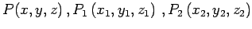
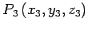
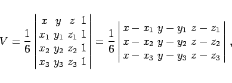
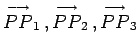
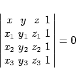

Inhalt Index DeskTop Bronstein

 Geometrie Vektoralgebra und analytische Geometrie Analytische Geometrie des Raumes Grundlegende Begriffe und Formeln, räumliche Koordinatensysteme
Geometrie Vektoralgebra und analytische Geometrie Analytische Geometrie des Raumes Grundlegende Begriffe und Formeln, räumliche Koordinatensysteme


Vier Punkte  und  können entweder einen Tetraeder bilden oder in einer Ebene liegen.
Der Rauminhalt eines Tetraeders kann über
|  | (3.389) |
berechnet werden, wobei sich nur dann ein positiver Wert V > 0 ergibt, wenn die Orientierung des Vektorentripels  mit der Orientierung des Koordinatensystems übereinstimmt (s. affine Koordinaten). Im entgegengesetzten Falle ergibt sich ein negativer Wert.
In einer Ebene liegen die vier Punkte genau dann, wenn die Bedingung
|  | (3.390) |
erfüllt ist.